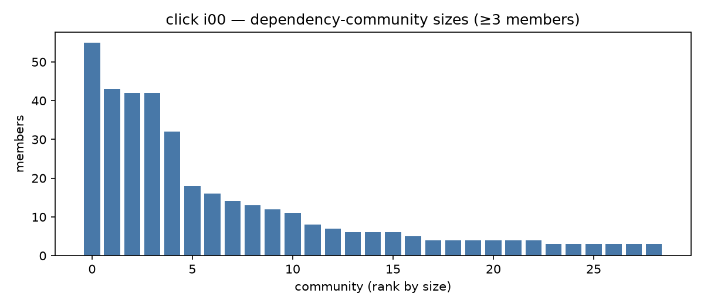
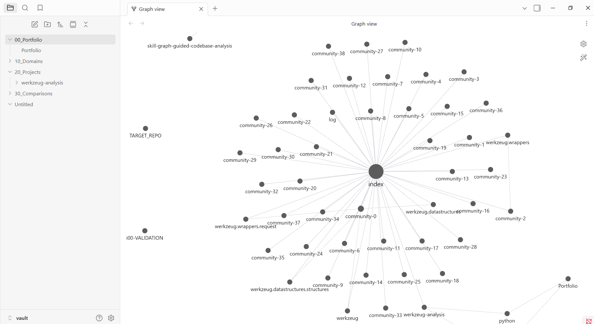
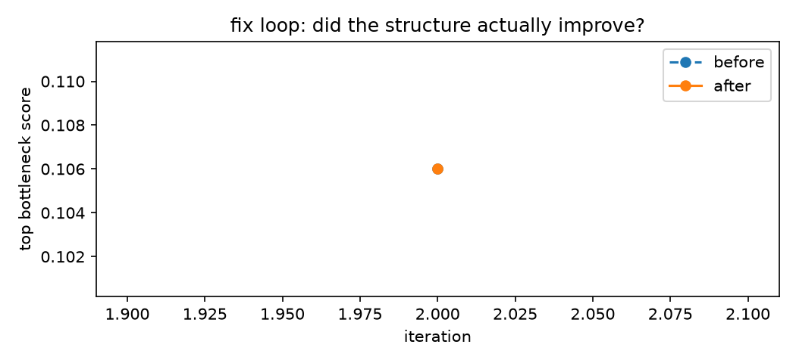
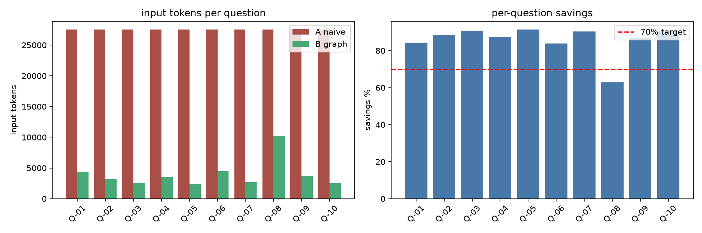

Lecture 07 — Reverse Engineering of Graph Knowledge Systems (Dr. Yoram Segal, June 2026)
main — all results, artifacts, and history are committed there.
This project reverse-engineers an unfamiliar Python repository — pallets/werkzeug (the WSGI toolkit under Flask, 138 .py files / 27,498 LOC) — through a deterministic dependency knowledge graph. The graph is rendered as an Obsidian vault with LLM-written wiki pages, mined for architectural defects (god modules, single points of failure, traceability gaps) with evidence-chained findings, subjected to a test-guarded fix loop, and used to prove that graph-guided retrieval is dramatically cheaper than naive context-stuffing in a frozen A/B experiment. The guiding principle is deterministic spine, LLM at the edges: extraction, metrics, detectors, diffs, and loop control are plain, tested Python; the LLM only writes narratives, plans, and edits, always through a gated client.
| KPI | Target | Result |
|---|---|---|
| Token savings (graph vs naive) | ≥ 70% input tokens | 89.8% median 91.3% — all 10 questions ≥ 82.4% |
| Validated architectural defects | ≥ 2 | 2 — werkzeug.http & werkzeug.datastructures god-nodes |
| Automated fix (tests green + graph improves) | ≥ 1 or honest analysis | honest NO_SAFE_ACTION (green but no structural gain → reverted) |
| Test coverage | ≥ 85% | ≈ 96% (~350 tests) |
| Quality gates | ruff 0 · ≤150 code-lines/file · no hardcodes/secrets | GATES: GREEN |
| Cost discipline | under $10 firewall, every call ledgered | $0.088 over 109 gated calls |
Answer correctness is established by blind two-scorer human evaluation (anti-bias control); the 89.8% above is the measured input-token result.
A repo-agnostic pipeline exposed as a thin hw4 CLI over an Hw4Sdk facade (the CLI and agents hold zero business logic):
| Stage | Command | Output |
|---|---|---|
| Graph | hw4 graph | immutable, content-hashed graph iteration + metrics |
| Vault | hw4 vault | Obsidian taxonomy + LLM wiki (5 hubs + 39 community pages) |
| Analyze | hw4 analyze [--agents] | detectors → findings.json + FINDINGS.md (+ CrewAI narratives) |
| Fix | hw4 fix <id> | branch-isolated, test-guarded improvement loop + loop_log |
| Experiment | hw4 experiment | frozen A/B token study + blind scoring pack |
| Report | hw4 report --dashboard | REPORT.md + Refactor Truth Dashboard |
Every external call funnels through one API Gatekeeper (rate windows, FIFO queue, bounded retries, budget firewall, JSONL token ledger) — the LLM client cannot be constructed without it. Evidence is a first-class enum (EXTRACTED / INFERRED / AMBIGUOUS) carried from extractor to fix-eligibility: AMBIGUOUS claims are a human stop-flag, never an input to automated change.
Iteration 0 (backend ast_extractor/1.00, content hash 54274cf9…, reproduced identically on rebuild):
| Nodes | Edges | Evidence | Structure |
|---|---|---|---|
| 1,912 (1,553 fn · 219 class · 84 module · 43 doc) |
3,304 (implements 1,932 · calls 747 · imports 369 · tested_by 186) |
EXTRACTED 3,235 INFERRED 68 AMBIGUOUS 1 |
1,267 communities (1,204 singletons, ~39 real clusters) |


index at the centre, community clusters radiating out, one wiki page per key entity.Eight hypotheses (7 god-node + 1 traceability gap); two source-validated, the rest reasoned-rejected:
| Finding | Verdict | Evidence |
|---|---|---|
F-005 · god-node · werkzeug.http | validated | 1,543 LOC bundling ≥6 header families (cookies, etags, dates, ranges, accept/cache-control/csp); fan-in 21 importers, no per-concern seam |
F-001 · god-node · werkzeug.datastructures | validated | rank-1 bottleneck; degree 76, fan-in 66, reaching 11 communities — a namespace backbone over ~10 container families |
| F-002/003/004/006/007 | rejected | public façades (wrappers), cross-cutting error layer (exceptions), test driver, low-cohesion utility — not entangled cores |
F-008 · trace-gap · wsgi.make_line_iter | rejected | changelog records its removal; the symbol is correctly absent — a doc-history artifact, not a defect |
No SPOF finding — no node reaches a mandatory-path ratio ≥ 0.3 (highest is datastructures at 0.106). werkzeug's hubs are reachable by multiple paths; reported honestly rather than forced. Full 5-step inference per validated finding + diagrams in results/FINDINGS.md.
The loop targeted the validated http god-node with a bounded strategy (extract the smallest cohesive group of private helpers into a sibling module, import them back, never touch the public API).
| Target | Tests | Structure | Verdict |
|---|---|---|---|
F-005 http | 992 / 992 green (behavior preserved) | bottleneck 0.106 → 0.106; isolated 1250 → 1253 | regressed → REVERTED |
Stop reason NO_SAFE_ACTION: the extraction was behavior-preserving but did not improve the structure (the god-node's fan-in of 21 external importers is unchanged by relocating private helpers), so the graph-diff guard reverted it. A green-but-non-improving refactor is rejected, not faked — the loop empirically restated the finding.

10 spot-checked questions (3 locate / 4 path / 3 impact), 2 conditions × 2 repetitions, temperature 0, tokens taken only from provider API metadata; dataset sha256-sealed. Condition A = naive whole-file pasting (capped at 16k, truncated on all 10); Condition B = graph-guided ego-subgraph + wiki pages.
| Run | Retrieval caps | Cond B / cell | Overall savings | KPI |
|---|---|---|---|---|
| Run 1 | radius 2 · 40 nodes · 3 seeds · 3 pages (default) | ~6.5k | 58.7% | below target (archived) |
| Run 2 | radius 1 · 20 nodes · 2 seeds · 2 pages (sensitivity-tuned, env overrides) | ~1.6k | 89.8% | ≥70% met |
Run 2: input tokens collapse from 313,440 (naive) to 31,986 (graph). By tier: locate 90.3% · path 90.2% · impact 88.5%; every question clears 70% (lowest Q-09 datastructures-impact 82.4%). The tuning was motivated by the one-at-a-time sensitivity study, with the frozen dataset and committed config left untouched (runtime knobs only).

uv run hw4 graph workspace/target --iteration 0 reproduces an identical content hash (results/graphs/i00/VALIDATION.md).results/experiment/) — the 89.8% is conditional on that gate.NO_SAFE_ACTION, not a green merge.This project is released under MIT. The analysed repository pallets/werkzeug is BSD-3-Clause (© Pallets), used here for educational analysis with attribution. Grounding references: Liu et al. 2024, Lost in the Middle (TACL); Vaswani et al. 2017, Attention Is All You Need.